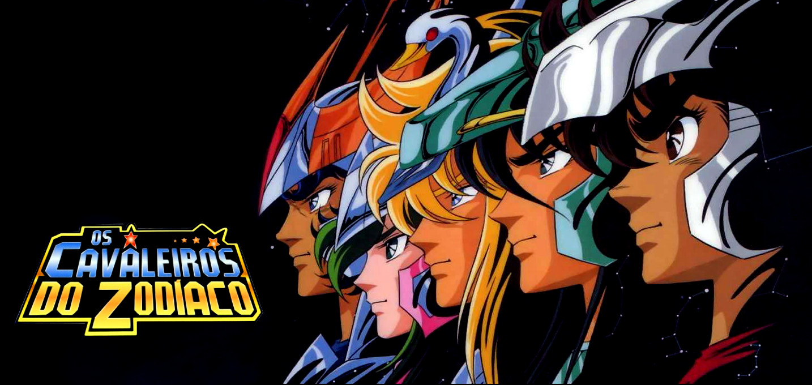
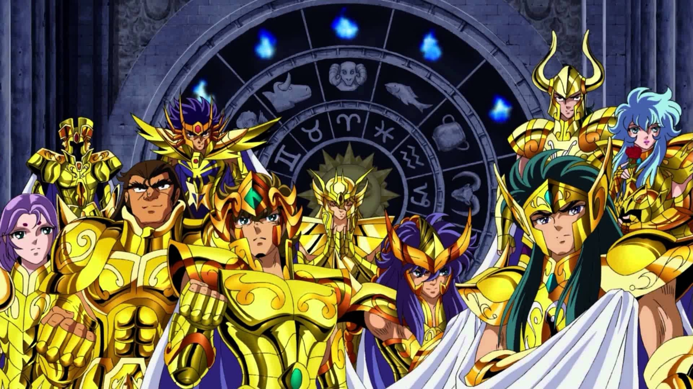

O que é Os Cavaleiros do Zodíaco (Saint Seiya)
Criado por Masami Kurumada em 1986, Saint Seiya conta a história de jovens guerreiros chamados Cavaleiros,
que lutam protegendo a deusa grega Atena contra outras divindades malignas que tentam dominar a Terra.
Utilizando a energia interior conhecida como "Cosmos" e trajando Armaduras sagradas baseadas nas constelações,
eles enfrentam desafios extremantes em nome da justiça e da paz.

Prepare-se para explorar todo o universo da série, desde a Guerra Galáctica até as profundezas do Submundo.
Os Cavaleiros são divididos em diferentes patentes de acordo com a força de suas armaduras: Bronze, Prata e Ouro. Cada um é protegido por uma constelação guardiã e treinado em diferentes partes do mundo.
A principal missão dos Cavaleiros de Bronze — Seiya, Shiryu, Hyoga, Shun e Ikki — é proteger Saori Kido, a reencarnação de Atena nesta era, garantindo a salvação da humanidade contra as forças do mal.
Saint Seiya - Pegasus Fantasy

© Todos os direitos reservados - Miguel Oliveira